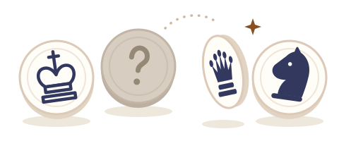
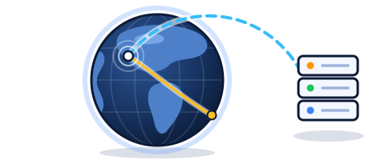
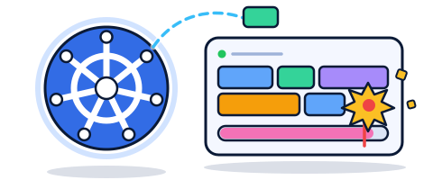

一个懒人的自留地。
四张纸牌，加减乘除，凑出 24。随心练习、13 轮竞速，或挑战无尽模式。
32 枚暗棋，翻开、移动，以大吃小。但兵能吃王。人机对战，或同屏双人。

一款老游戏的个人复刻实验，只在本地运行。
换个视角，打开你的金融工作台。
点地球上任意一处，看附近的云机房和延迟。数据走哪条海缆、每一跳多远，一路画给你看。

用小游戏理解 Kubernetes：调度、OOM、滚动更新。再亲手写一个 Operator 的 Reconcile。

目前是一个非浏览器的 Godot 项目，只在本地运行，没有网页版。
出于同样的原因，这里不展示原作的美术、图片或视频。